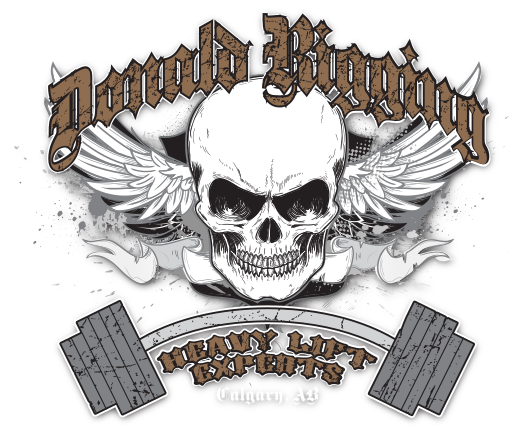

Site Services
Jack & Slide
Picker Services
Transportation
60 Ton Forklift
Rig Ups & Mechanics
Donald Rigging is equipped to handle all on-site service needs including heavy lift rigging, common service rigging, skid steers, telehandlers, front end loaders, tractor trailers, boom trucks, water pumping, snow removal, dirt work, crane pad construction and warehousing servcies.
Donald Rigging has a division that specializes in moving commodities with weights varying from 500lbs to 1,500,000lbs. We have 3 full jack & slide crews, all equpped with unified jacking pumps for multi-point lifts, as well as 300 ton push pull track for moving loads under control without the aid of winch cables. We also have multiple other pieces of specialized moving equipment designed to meet our customer's specific needs.
Donald Rigging Utilizes multiple boom trucks for day to day operations ranging from 23 ton to 45 ton. We use National Crane, Manitex, and Hydra Lift Weldco branded boom trucks. All of our boom trucks are capable of hauling a trailer and traveling between provinces. Our operators are ticketed, which gives our customers the confidence that their lift will be done ina safe and professional matter.
Donald Rigging has a fleet of winch & highway tractors, along with a trailer fleet that consists of hi-boys, low-boys and double drop trailers. All of our drivers have many years of experience moving freight in Alberta and throughout Western Canada.
In 2008, Donald Rigging purchased "Brutus" our 60 ton lift truck from Rigger Lift in the USA. IT still stands as one of the largest lift trucks in Western Canada and is 8'W and will fit insde a 10'H door. This machine utlizes removable counter-weight slabs allowing us to transport it on smaller trailers, keeping the cost down for our custoemrs. It is equipped with forks for low loads, along with aboom attachment for lifting commodities from above. This machine is available for a single lift, or for long term rent (with or without operator)
Donald Rigging is based in Calgary with a full service 15,000 sq/ft shop. This shop is utilized for rigging up on our own equipemnt, along with providing custom work for our customers. We have a welding bay fully equipped with an overhead crane for fabrication, along with licensed mechanics to meet all of our customer's truck and trailer needs